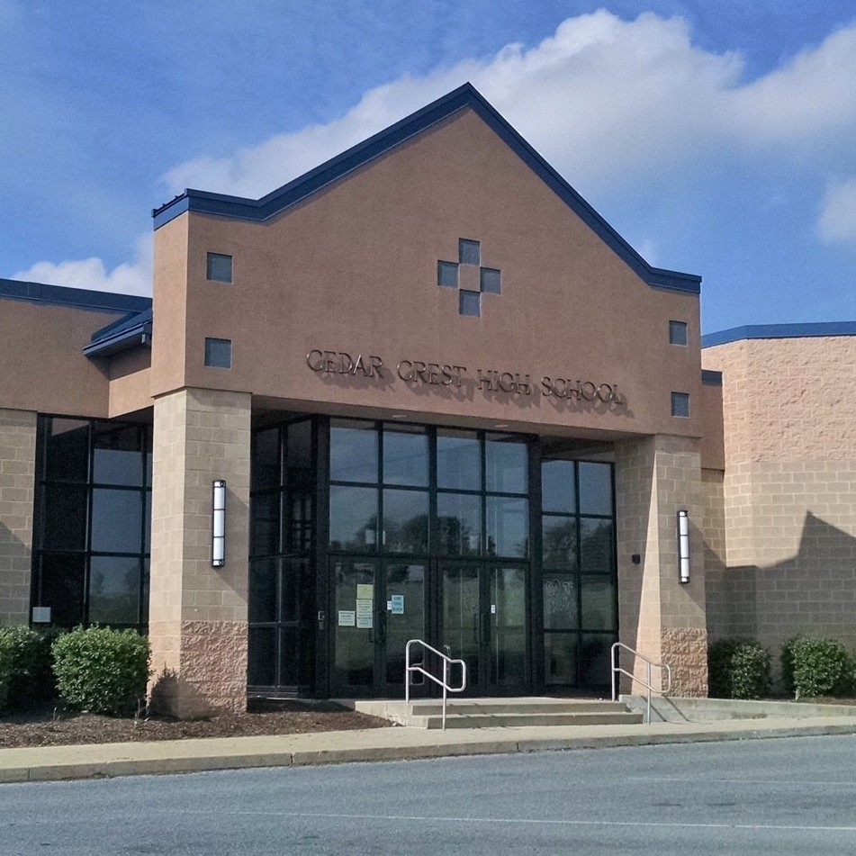

About Byte Club
Byte Club is a club hosted by Cedar crest for aspiring computer science students to test and expand their abilities in different CS related fields.
Byte Club is advised by (Eggert or Reed, don’t know who to put) and run by an elected chapter of five members
Purpose
This site is here to serve the members of the Byte Club as well as grant assistance to those who are learning Computer Science. Our information can help with Web-based Languages, Java, C, and others. This site will also provide you with suggested tools and practices to ensure an efficient and productive environment.

Any announcements or important info will be posted on the blog page and the community discord server. Byte club will operate every Week 2.